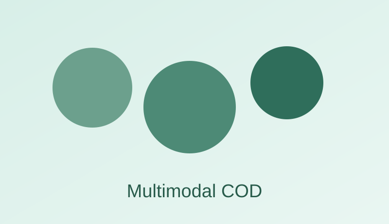
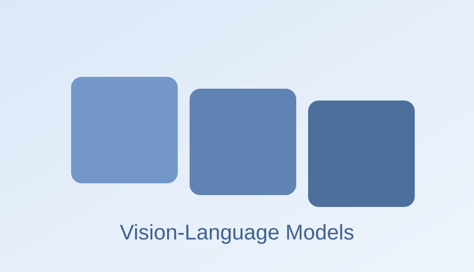
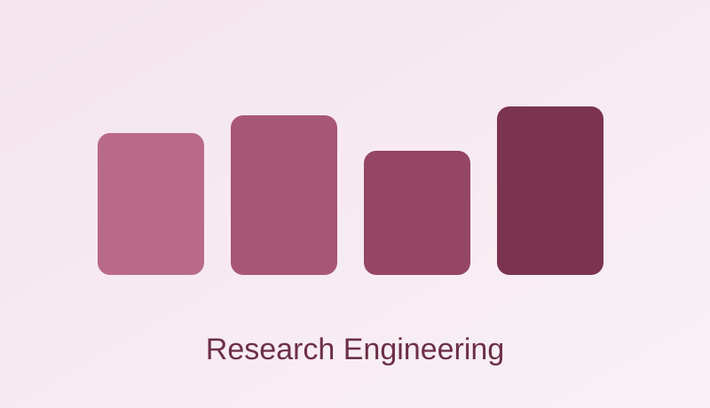

Multimodal COD
研究 RGB、Depth、Language 等多模态融合机制，提升复杂背景中伪装目标检测能力。

典型任务：伪装目标检测、跨模态特征融合、边界细节增强。
Research Group Website
围绕多模态视觉理解与智能系统，展示研究方向、论文框架、实验 Demo 与代表性成果。
研究 RGB、Depth、Language 等多模态融合机制，提升复杂背景中伪装目标检测能力。

典型任务：伪装目标检测、跨模态特征融合、边界细节增强。
探索 VLM 在视觉理解任务中的任务迁移、提示设计与小样本适配能力。

典型任务：Prompt 设计、指令跟随、开放词汇视觉理解。
构建规范化实验管线，覆盖复现、消融、可视化与误差分析，保证论文结论可靠。

典型任务：实验自动化、日志分析、复现实验平台构建。